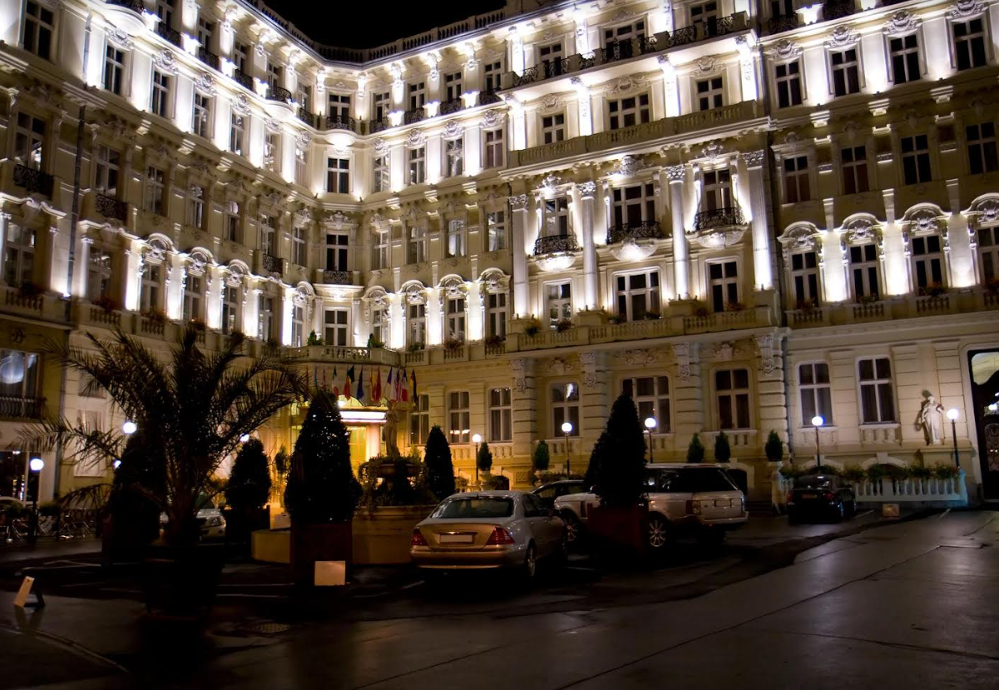
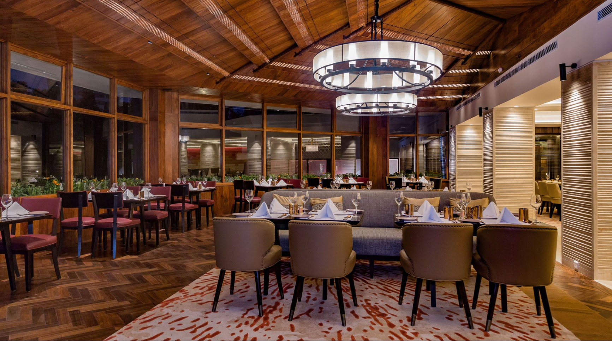

Welcome to The Luxe Lodge, a sanctuary of luxury and comfort nestled in the vibrant heart of Kathmandu, Nepal. Immerse yourself in the rich cultural heritage and breathtaking landscapes of this ancient city, while indulging in the unparalleled elegance and modern conveniences of our boutique hotel. Our dedicated team is committed to providing exceptional service, ensuring your stay with us is nothing short of extraordinary. Whether you're here for business or pleasure, The Luxe Lodge offers a unique blend of modern sophistication and timeless charm, making it the perfect home away from home. Let us redefine your expectations of luxury and comfort, as we welcome you to experience the magic of Kathmandu in style.

where luxury and comfort meet.
Experience exceptional service,
exquisite dining, and unforgettable
moments in our
newly renovated
rooms and facilities. Book your stay
with us today and discover why we're
the premier destination
for travelers
seeking a memorable getaway.
The Luxe Lodge is a heritage hotel located in Durbar Marg, the thriving city center of Kathmandu Valley, in a prime location that is minutes walking distance from the former Royal Palace. Durbar marg is a commercial area with high-end shops and a variety offood options. Our 5 star deluxe luxury property is 5 KM away from the Tribhuvan International Airport, about 1 KM from the famous tourist hub of Nepal- Thamel.

At The Luxe Lodge, we strive to create a warm and inviting atmosphere that feels like a home away from home. Whether you're in town for a few days or a few weeks, we're committed to making your stay as comfortable and enjoyable as possible. We look forward to welcoming you to The Luxe lodge.
Paryatak Marg,Durbar Marg,
Ward no. 1, Kathmandu District
Province 3, Nepal
Tel: +977 1 4238847, 4329383
Fax: +977 1 4228783, 4237898
reservation@luxelodge.com.np
@Copyright TheLuxeLodge 2024- All Right Reserved.